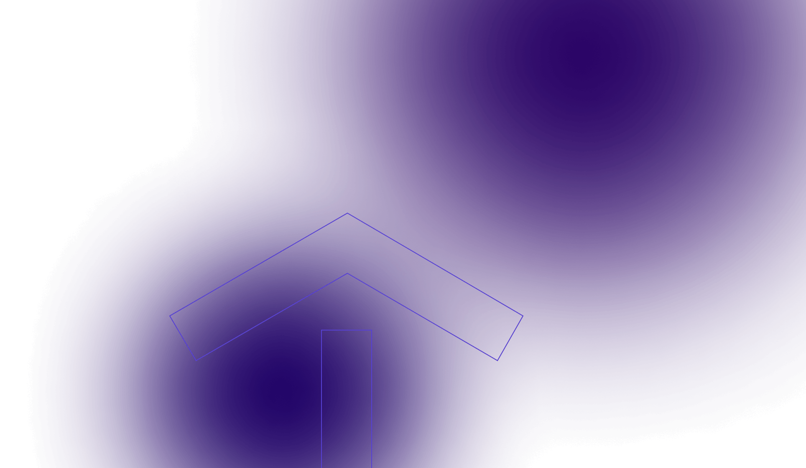
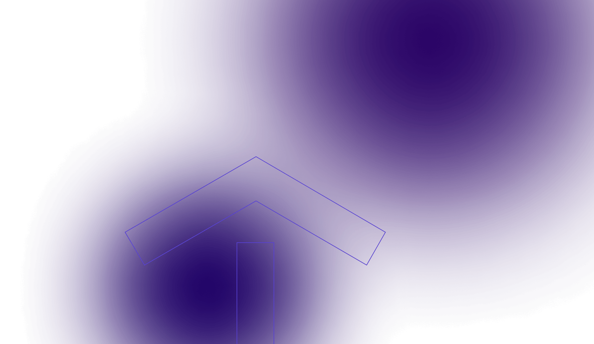
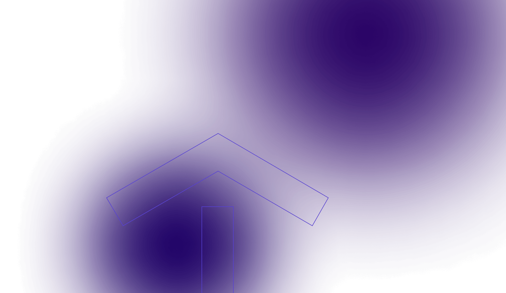

Creative technologist
I'm blending and in-depth knowledge of Technology, Design, and lots of creativity to develop innovative solutions.
 

I'm blending and in-depth knowledge of Technology, Design, and lots of creativity to develop innovative solutions.

Adept at building React web applications, expert in Responsive Design, proficient in Accessibility, and CMS knowledge.
Skilled at User Research, highly proficient in the creation of technically realistic and fact-based design prototypes.
Proficient at ensuring the user-friendliness, Accessibility, and regulatory compliance of Web Applications.
As a seasoned UI expert with 15+ years of experience in large-scale platform development, I build solid code-base foundations that prevent costly repairs down the line.
Turning visual designs into pixel-perfect layouts ... Creating responsive and complex UI layouts ...
10+ years WordPress expertise, ... W3CAG, AODA, ...
My body of work spans across UI Development, UX Design, Usability, and Accessibility.
I’ve created a knowledge repository of React’s best patterns. The…
Redesign of the government of Ontario web applications to boost…
Major overhaul of the website’s visual and informational structure of…
Ensuring Accessibility compliance for a large public website as per…